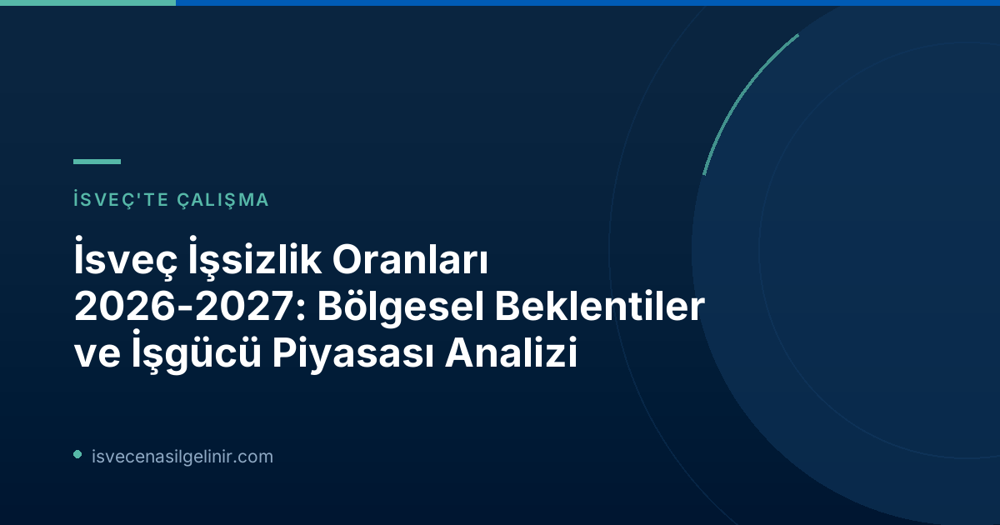

İsveç İşgücü Piyasasında Güncel Durum ve Genel Trendler
İsveç ekonomisi güçlenmeye devam ederken, işsizlik oranlarında genel bir düşüş kaydedildi. Ancak, Arbetsförmedlingen’in raporuna göre, toparlanma hızı ilkbahar aylarında bir miktar yavaşlama gösterdi. Rapor, çoğu ilin bu yıl resesyon öncesi işsizlik seviyelerine ulaşmasını öngörürken, özellikle Stockholm ve Västra Götaland gibi büyük şehirlerin 2027 yılına kadar bu seviyeye gelmesinin beklendiğini belirtiyor.
Bölgesel İşsizlik Tahminleri: Hangi İller Öne Çıkıyor?
Arbetsförmedlingen'in "Regionala utsikter" raporu, İsveç'teki iller arası işsizlik oranları farklılıklarının önümüzdeki dönemde de korunacağını işaret ediyor. Bu bölgesel ayrışma, iş arayanlar için lokasyon ve sektörel tercihin önemini bir kez daha ortaya koyuyor.
En Yüksek İşsizlik Beklenen İller (2027)
Mevcut durumda en yüksek işsizlik oranlarına sahip olan Skåne, Västmanland, Södermanland ve Gävleborg illerinin 2027 yılında da en yüksek seviyelerde kalması bekleniyor.
En Düşük İşsizlik Beklenen İller (2027)
Buna karşılık, şu anda en düşük işsizlik oranlarına sahip olan Norrbotten, Gotland, Jämtland ve Västerbotten illerinde de bu durumun devam edeceği tahmin ediliyor.
2026'da İşsizlikte En Büyük Azalma Beklenen İller
2026 yılı içerisinde işsiz sayısının en çok azalacağı iller ise Västerbotten ve Blekinge olarak gösteriliyor. Bu olumlu gelişmenin nedenleri arasında bölgesel dışa göçün yanı sıra, yeşil sanayi yatırımları ve savunma sektörü faaliyetlerindeki artışlar yer alıyor.
Lars Lindvall, Arbetsförmedlingen Analiz Departmanı Vekil Müdürü, konuyla ilgili yaptığı açıklamada: "Örneğin Skåne'de işsizlik Norrbotten'dekinin iki katından fazla. Rekabetin daha az ve işlerin daha fazla olduğu mesleklerde ve yerlerde iş bulma şansı artıyor." ifadelerini kullandı. Bu durum, doğru bölge ve sektöre odaklanmanın iş bulma sürecindeki kritik rolünü vurgulamaktadır.
Beceri Uyumsuzluğu ve İşgücü Piyasasındaki Zorluklar
Rapor, İsveç işgücü piyasasının karşı karşıya olduğu en büyük sorunlardan birine dikkat çekiyor: beceri uyumsuzluğu. İşverenler, açık pozisyonlar için doğru niteliklere sahip eleman bulmakta zorlanırken, birçok iş arayan ise talep edilen yetkinlikleri taşımıyor. Ekonomik toparlanma sürecinde bu uyumsuzluğun daha da belirginleşmesi bekleniyor.
İsveç İşgücü Piyasasında Nitelik Uyumsuzluğu Tablosu
| Sorun | Açıklama |
|---|---|
| İşverenlerin Zorluğu | Doğru niteliklere sahip çalışan bulmada yaşanan güçlük. |
| İş Arayanların Eksikliği | Birçok iş arayanın talep edilen becerilerden yoksun olması. |
| Genç Nüfus Azalışı | Son yıllarda üçte birinden fazla ilde çalışma çağındaki nüfusun azalması, nitelik açığını büyütme riski taşıyor. |
Arbetsförmedlingen'in açıklamalarına göre, İsveç'te çalışma hayatına atılmak ve kalıcılık sağlamak için gerekli olan dil ve mesleki yeterliliklerin önemi göz ardı edilmemelidir. Bu konuda daha fazla bilgi ve sverigemedborgarskapsprov.com hazırlık kaynakları için sitemizi ziyaret edebilirsiniz.
Çözüm Önerileri: Arbetsförmedlingen Ne Diyor?
Lars Lindvall, işgücü piyasasındaki eşleşme sorunlarını azaltmak ve daha fazla insanı istihdama katmak amacıyla iki temel strateji önermektedir:
- Daha fazla iş arayanın, işverenler tarafından talep edilen becerileri, özellikle mesleki eğitimler aracılığıyla edinmesi gerekmektedir.
- İşverenlerin, işgücü piyasasının dışındaki veya dezavantajlı konumdaki kişilere iş fırsatları sunma konusunda daha açık olması önemlidir.
Bu adımların, daha fazla işin doldurulmasına ve genel istihdam oranlarının artırılmasına yardımcı olacağı vurgulanmaktadır.
Arbetsförmedlingen'in "Regionala Utsikter" Raporu Hakkında
“Regionala utsikter” raporu, Arbetsförmedlingen’in işgücü piyasası tahmin çalışmalarının önemli bir parçasıdır ve yılda iki kez, Haziran ve Aralık aylarında yayımlanmaktadır. Rapor, ülke genelindeki gelişmelerin daha derinlemesine incelendiği “Arbetsmarknadsutsikterna våren 2026” gibi diğer analizlerle birlikte değerlendirilmektedir. Raporda kullanılan grafik ve tablolara ait veriler ile İş İlanları ve İnsan Kaynakları İhtiyaçları (LOR) anket sonuçları, Arbetsförmedlingen Analizler ve Tahminler sayfasında kamuoyunun erişimine sunulmaktadır.
Referanslar
İsveç İş Başvurularınızda Uzman Desteği
İsveç'te iş bulma süreçlerinizde veya göçmenlik başvularınızda profesyonel danışmanlık hizmeti almak için bizimle iletişime geçin. Güncel iş piyasası bilgilerine ve yasal prosedürlere hakim ekibimizle başarıya ulaşın.